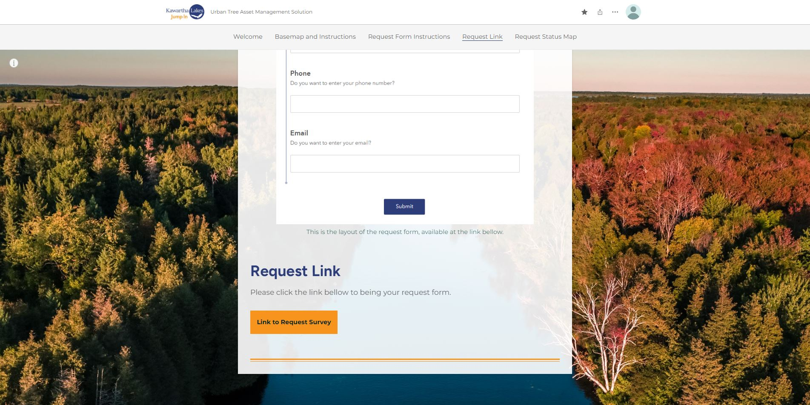
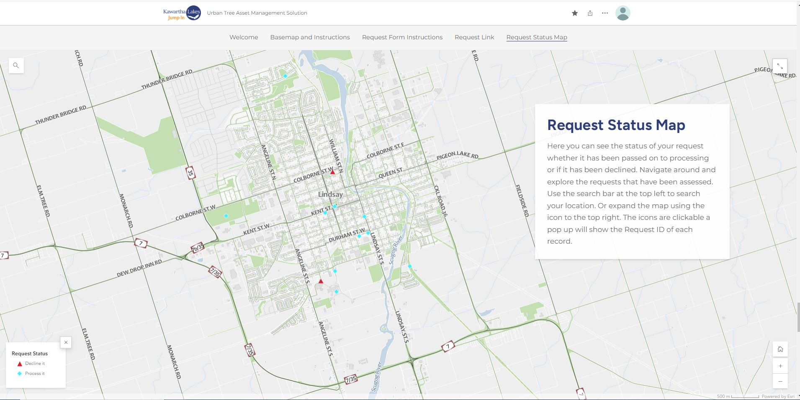
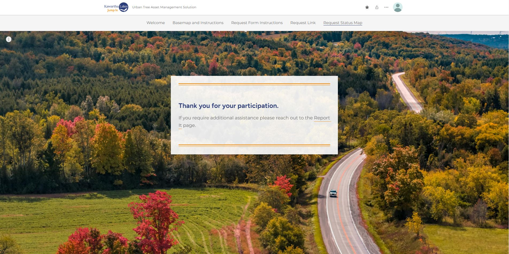
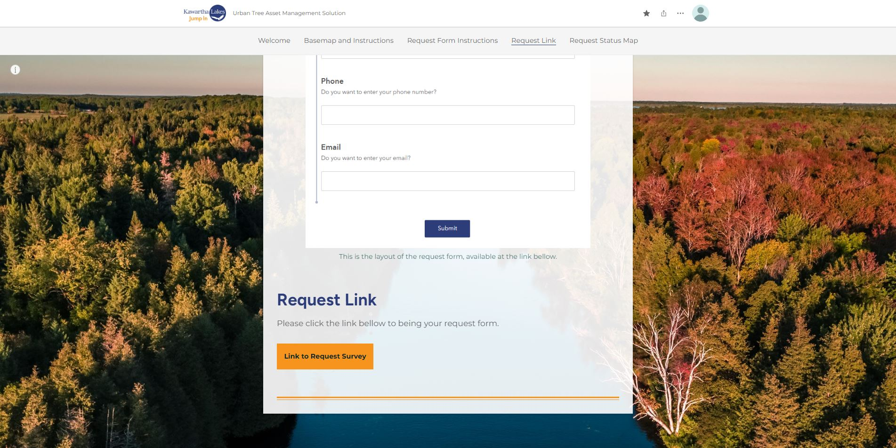
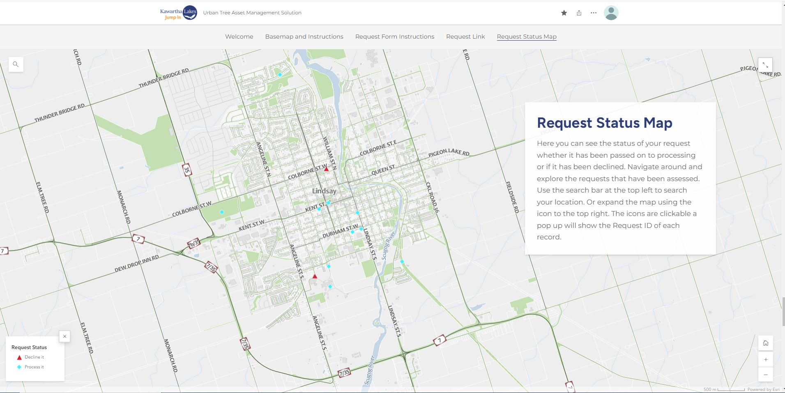
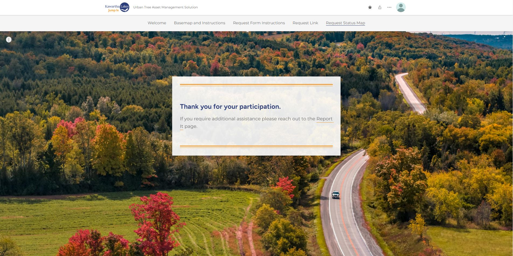

GIS Database Survey 123 Field Maps Scripts Basemap Story Map Dashboard
Deliverables
And Accomanying Methodology
GIS Database
The consolidated schema, designed for efficient data management, includes the CKL_TREE_PRIMARY layer for the tree inventory, the CKL_TREE_REQUEST layer for community tree requests, and the CKL_TREE_REMOTESENSING layer for trees collected via remote sensing. This schema details field names, types, sizes, descriptions, domains, and requirements, providing a clear data storage structure.
CKL_TREE_PRIMARY
Includes the tree inventory with detailed physical and health attributes
CKL_TREE_REQUEST
manages requests for tree services, and capture detailed information about
the request, its status, and related contact information.
Survey 123

Make a request Survey using Survey123 Connect
A form using Survey123 Connect was created to collect field data based on the requirements made by the
community through the Urban Tree Data Solution portal. Data collected through the survey is stored directly
in the CKL_TREE_REQUEST data layer in ArcGIS Online

CKL Validation Request Process Survey using Survey123 Connect
The supervisor uses this survey to validate the community's requests, confirm if they are authentic,
and move them forward to processing. The supervision requires a friendly interface intended for users
less experienced with GIS. The Validation Request Process Survey allows to edit the Status field for the new requirements.
Field Maps

TreeRequestProcessing using using Field Maps
The Field Crew populates the attributes of records marked as "in process" by the supervisors and has
access to the Field Maps survey called TreeRequestProcessing, which edits the CKL_REE_REQUEST layer.
This survey has the functionality to work offline in areas without internet coverage and geofencing capabilities that allow the field crew members to get an alert whenever they are outside the perimeter that corresponds to the Kawartha Lakes boundary
Scripts
The need to optimize operations by using programming languages was identified during the development of the Project
The sequential process followed to optimize the operations is shown below:
- Identification of tasks to automate within the data flow
- The tasks were performed for an example dummy data in ArcGIS Pro
- Export the geoprocessing code from ArcGIS Pro to a .py file
- Determine the scripts orders according to the workflow objectives
- Script editing for use in the cloud input layers, temporary layers, condition statements and queries
- Local testing and task scheduling using the windows task scheduler as requested by the client
Basemap
The basemap was created by selecting out polygons based on the ownership field which creates a separate feature class only owned by the city this included roads, road allowances, parks, and other various city property. Creating a visually appealing basemap takes time and choosing colours that reflect the importance of each area is key. Creating a custom green indicating city areas needed to be visually distinguishable from the grey toned down areas which are private areas. Creating visibility ranges for labels is also key to keeping the map simple and distinguishable at all levels. Context was needed so there is not a floating map in space there had to be areas like other municipalities that were added to create a map in context.
This ArcGIS Pro file is then converted into a vector tile file and uploaded onto ArcOnline to create a custom basemap.
Story Map
 




The StoryMap is added for the ease of the public, to help those understand the use and the purpose of this application. As well it serves as instructions to fill out the forms for requests. This StoryMap needed to match the branding and style of the Kawartha Lakes.
Dashboard
The dashboard is an internal facing application for the supervisor to show statistics on the jobs done and those that still need to be looked at. as well this dashboard serves as a portal to the validation survey for the supervisor. This dashboard has personal information on it and so should only be seen by the supervisor or their equals for security reasons. Some of the public wants to be contacted this information is available in the map where the supervisor can search for the record based off location or tree request ID.
This dashboard is active based on the map the records and list change as well as the chart that shows the trees conditions this can be helpful for storm damage where the conditions of trees in proximity may be all damaged it is visible on this dashboard.